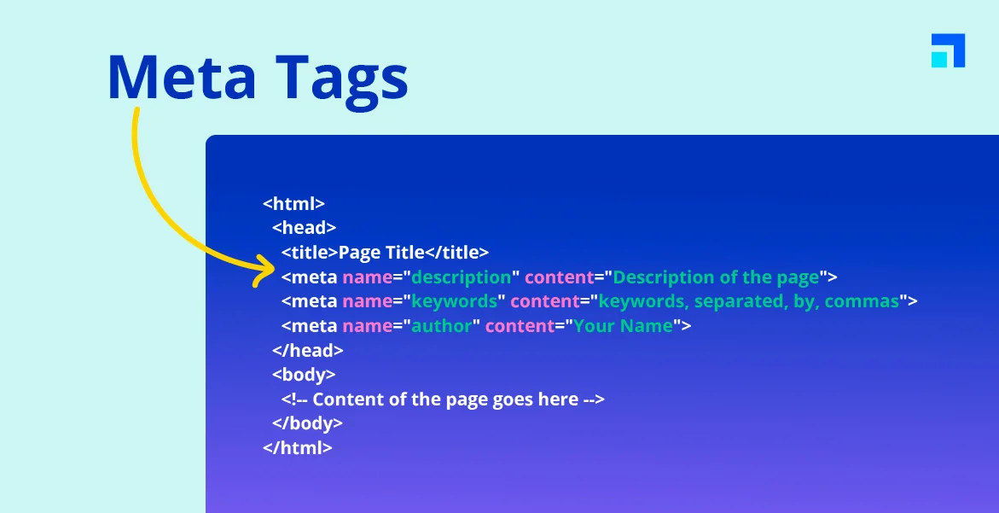

Marcação de texto
Nota: 5,0 8,5. Preciso revisar tabelas.
A sigla CSS fica para a próxima unidade.
Progresso: 70%
Confiança:

Quando usar del e ins?
O del mostra o texto que saiu e o ins mostra o que entrou no lugar.
Heitor Mendes Crispim
| Categoria | Tag | Função |
|---|---|---|
| Semânticas | <header> | Cabeçalho da página |
| <nav> | Menu de navegação | |
| Multimídia | <audio> | Toca áudio local |
| Resumo das tags vistas nas aulas | ||

Nota: 5,0 8,5. Preciso revisar tabelas.
A sigla CSS fica para a próxima unidade.
Progresso: 70%
Confiança:
O del mostra o texto que saiu e o ins mostra o que entrou no lugar.